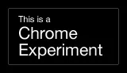
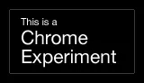

A two hand flick up or down activates the slide overview.
Tips and troubleshooting in the slides below (you can still use the keyboard or reveal.js's built in controls)
A framework for easily creating
beautiful presentations using HTML
It's similar to Prezi or Powerpoint, except it's in HTML5.
HTML5 is the reason behind Reveal's speed, looks, and
COOL 3D TRANSITIONS
Beat that, Prezi! (which uses Flash)